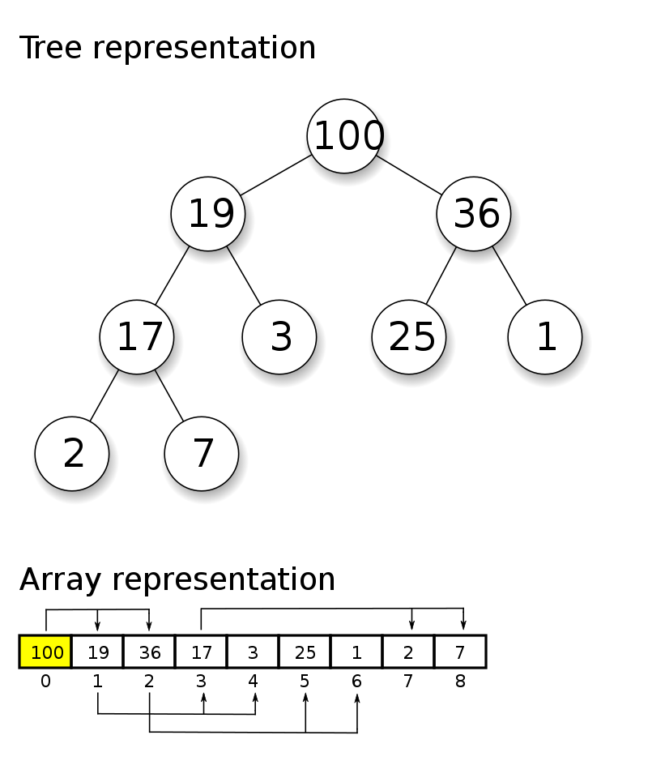
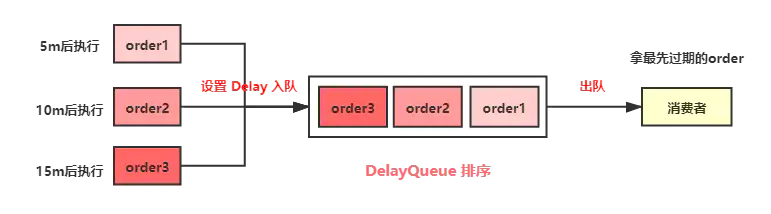
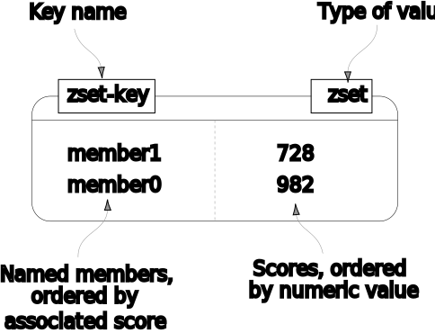
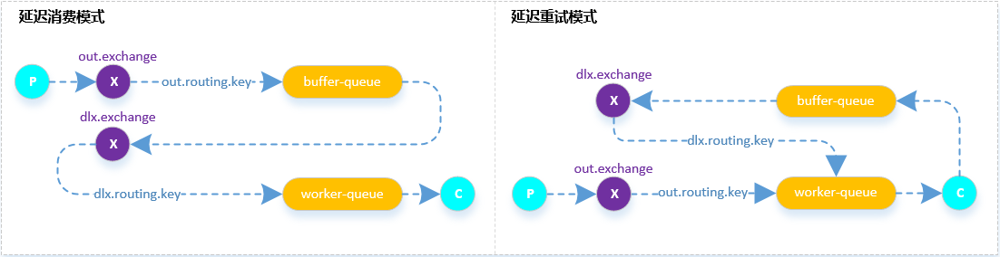
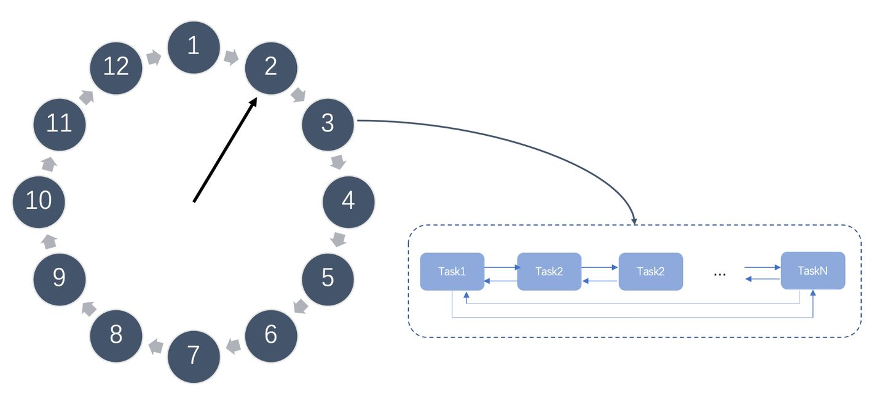
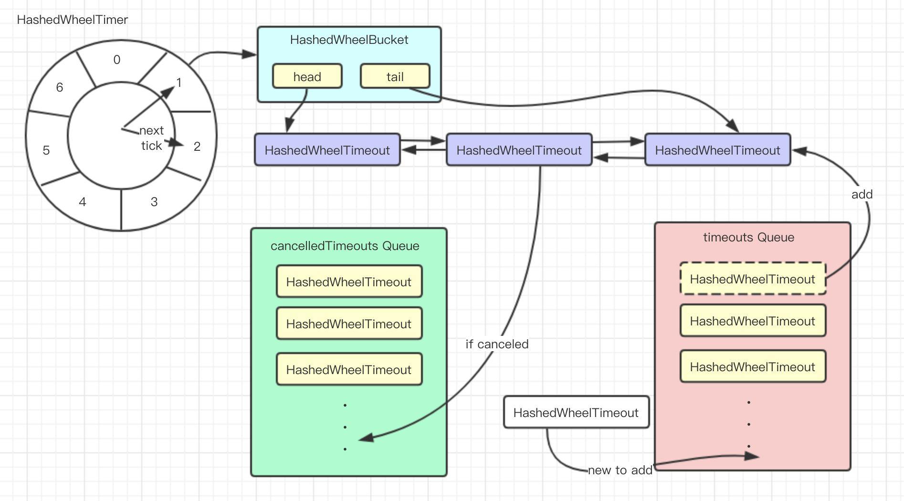
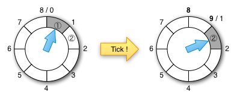
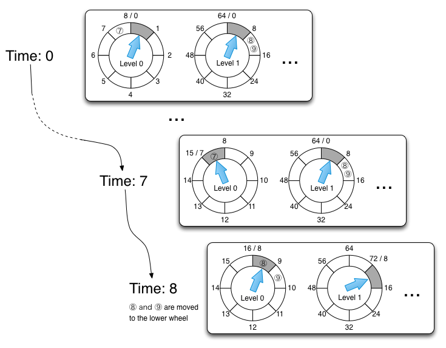

延迟队列实现
延迟队列定义
首先，队列这种数据结构相信大家都不陌生，它是一种先进先出的数据结构。普通队列中的元素是有序的，先进入队列中的元素会被优先取出进行消费；
延时队列相比于普通队列最大的区别就体现在其延时的属性上，普通队列的元素是先进先出，按入队顺序进行处理，而延时队列中的元素在入队时会指定一个延迟时间，表示其希望能够在经过该指定时间后处理。
延时队列的应用
延时队列在项目中的应用还是比较多的，尤其像电商类平台：
1、订单成功后，在30分钟内没有支付，自动取消订单
2、外卖平台发送订餐通知，下单成功后 60s 给用户推送短信。
3、如果订单一直处于某一个未完结状态时，及时处理关单，并退还库存
4、淘宝新建商户一个月内还没上传商品信息，将冻结商铺等
。。。。
上边的这些场景都可以应用延时队列解决。
延时队列的实现
优先队列与二叉堆
**堆（heap）**是一种特殊的基于树的数据结构，它本质上是一个满足堆属性的几乎完整的树，通常使用数组来实现。
堆是一种称为优先级队列的抽象数据类型的最高效率实现，实际上，优先级队列通常称为“堆”，无论它们如何实现。在堆中，最高（或最低）优先级的元素总是存储在根，也称为大顶堆（小顶堆）。但是，堆不是排序结构；它可以被认为是部分有序的。当需要重复删除具有最高（或最低）优先级的对象时，堆是一种有用的数据结构。
堆最常见的使用情况就是动态求极值，动态指我们会放入和移出，所以需要动态求极值。由于根节点就是极值，这样 O(1) 也可以取到极值，但是调整过程需要 O(logN)。
堆的常见实现是二叉堆（binary heap），对应其树的表现形式为二叉树，下图为大顶堆（父节点的权值大于儿子的权值）：
Java Timer 和 ScheduledThreadPoolExecutor
Timer
Java Timer 可以实现延时任务，也可以实现周期性任务。Timer 内部使用优先队列存储任务，该优先队列使用二叉堆实现，并使用单个线程不断地拿优先队列的第一个任务的执行时间和当前时间做对比。如果时间到了先看看这个任务是不是周期性执行的任务，如果是则修改当前任务时间为下次执行的时间，如果不是周期性任务则将任务从优先队列中移除。最后执行任务。如果时间还未到则调用 wait() 等待。
文档建议使用 java.util.concurrent 包下 ScheduledThreadPoolExecutor 替代 Timer，原因在于：
该类是单线程执行，那么如果一个任务执行的时间过久则会影响下一个任务的执行时间(当然你任务的 run 要是异步执行也行)。
并且从代码可以看到对异常没有做什么处理，那么一个任务出错的时候会导致之后的任务都无法执行。
ScheduledThreadPoolExecutor
ScheduledThreadPoolExecutor ，它是一个线程池，用于以给定的速率或延迟重复执行任务。 它实际上是 Timer / TimerTask 组合的更通用的替代品，因为它允许多个服务线程，接受各种时间单位，并且不需要子类化 TimerTask （只需实现 Runnable ）。 使用一个线程配置 ScheduledThreadPoolExecutor 其等效于 Timer 。
该类继承了 ThreadPoolExecutor，实现了 ScheduledExecutorService。可以定性操作就是正常线程池差不多了。区别就在于两点，一个是 ScheduledFutureTask ，一个是 DelayedWorkQueue。
其实 DelayedWorkQueue 就是优先队列，也是利用数组实现的二叉堆-小顶堆。而 ScheduledFutureTask 继承自 FutureTask 重写了 run 方法，实现了周期性任务的需求。
由于是线程池，可以多线程执行，可以传入 Callable 异常自己处理，或者被线程吞掉，不会影响其它线程。
Java DelayQueue 延时队列
JDK 中提供了一组实现延迟队列的 API，位于 java.util.concurrent 包下 DelayQueue。
DelayQueue 是一个**线程安全的无界阻塞（BlockingQueue）**队列，内部封装了一个 PriorityQueue（优先队列），PriorityQueue 内部使用完全二叉堆来实现队列元素排序，我们在向 DelayQueue 队列中添加元素时，会给元素一个 Delay（延迟时间）作为排序条件，队列中最小的元素会优先放在队首。队列中的元素只有到了 Delay 时间才允许从队列中取出。放入的元素通过实现 Delayed 接口来提供延迟时间，并实现其 Comparable 来比较后期时间先后。
take 方法检索并删除此队列的头，如有必要，阻塞直到延迟过期的元素在此队列上可用。
有限时间的阻塞使用当前 leader 线程的等待来完成，该线程被设计用来等待队列头部的元素。使用 Leader-Follower 模式的这种变体用于最小化不必要的定时等待。 当一个线程成为领导者时，它只等待下一次延迟到期，而其他线程则无限期地等待。领导线程必须在从 take() 或 poll(…) 返回之前向某个其他线程发出信号，除非某个其他线程在此期间成为领导。
poll 检索并删除此队列的头部，如果此队列没有延迟过期的元素，则返回 null。
由于是无界队列，所以 put、offset 入队元素永远不会阻塞。
先简单实现一下看看效果，添加三个 order 入队 DelayQueue，分别设置订单在当前时间的 5秒、10秒、15秒后取消。

Redisson RDelayedQueue
Redission 是 Redis 的 Java Client，为我们实现了很多易于使用的分布式集合类，这里就包括了延时队列，它允许以指定的延迟将每个元素传输到目标队列。实现其 RDelayedQueue 接口的类是 RedissonDelayedQueue，内部使用三个集合结构来实现：
- 延时队列 List：数据入队的队列
- 目标队列 List：过期数据所在的队列
- timeoutSet 过期时间 ZSet：分数值为 timeout 值，辅助判断元素是否过期
1 | RBlockingQueue<String> destinationQueue = client.getBlockingQueue("block_queue"); |
Redis ZSet
Redis 有一个有序集合（Sorted Set）的数据结构 ZSet，ZSet 中每个成员都有一个对应 Score，ZSET 中的成员按 Score 和 ZSET 中成员的排序顺序进行排序和访问。

那么我们可以通过以下这几个操作使用 Redis 的 ZSet 来实现一个延迟队列：
- 入队操作：
ZADD KEY timestamp task，我们将需要处理的任务，按其需要延迟处理时间作为 Score 加入到 ZSet 中。Redis 的 ZADD 的时间复杂度是O(logN)，N是 ZSet 中元素个数，因此我们能相对比较高效的进行入队操作。 - 起一个进程定时（比如每隔一秒）通过
ZREANGEBYSCORE或ZRANGE方法查询 ZSet 中 Score 最小的元素，具体操作为：ZRANGEBYSCORE KEY -inf +inf limit 0 1 WITHSCORES或ZRANGE KEY 0 0 WITHSCORES。查询结果有两种情况：
a. 查询出的分数小于等于当前时间戳，说明到这个任务需要执行的时间了，则去异步处理该任务，并移除该过期任务ZREM KEY task；
b. 查询出的分数大于当前时间戳，说明 ZSet 中所有的任务都还没有到需要执行的时间，则休眠一秒后继续查询；
同样的，ZRANGEBYSCORE操作的时间复杂度为O(logN + M)，其中N为 ZSet 中元素个数，M为查询的元素个数，因此我们定时查询操作也是比较高效的。
Redis 的 ZSet 有序集合使用跳表这种数据结构来存储和管理有序数据。
跳表（Skip List）
跳表是一种基于链表，并使用多层数组索引已达到近乎二分查找效率的有序数据结构，和二分查找一样，它使得包含 n 个元素的有序序列的查找和插入操作的平均时间复杂度都是 O(logN)。
我们知道，不借助额外空间的情况下，在链表中查找一个值，需要按照顺序一个个查找，时间复杂度为 O(N)，其中 N 为链表长度。但是链表对于插入、删除的时间复杂度只有 O(1)。数组和链表刚好相反，对于查找直接可以使用索引，在链表上使用数组索引就可以大大提高查询其性能，也是一种典型的用空间换时间的思想。

跳表与平衡树、哈希表的比较
- 跳表和各种平衡树（如 AVL、红黑树等）的元素都是有序排列的，而哈希表不是有序的。因此，在哈希表上只能做单个 key 的查找，不适宜做范围查找。所谓范围查找，指的是查找那些大小在指定的两个值之间的所有节点。
- 在做范围查找的时候，平衡树比跳表操作要复杂。在平衡树上，我们找到指定范围的小值之后，还需要以中序遍历的顺序继续寻找其它不超过大值的节点。如果不对平衡树进行一定的改造，这里的中序遍历并不容易实现。而在跳表上进行范围查找就非常简单，只需要在找到小值之后，对第1层链表进行若干步的遍历就可以实现。
- 平衡树的插入和删除操作可能引发子树的调整（再平衡），逻辑复杂，而跳表的插入和删除只需要修改相邻节点的指针，操作简单又快速。
- 从内存占用上来说，跳表比平衡树更灵活一些。一般来说，平衡树每个节点包含 2 个指针（分别指向左右子树），而跳表每个节点包含的指针数目平均为 1/(1-p)，具体取决于参数 p 的大小，p 为有 (i+1) 层指针的概率。如果像 Redis 里的实现一样，取 p=1/4，那么平均每个节点包含 1.33 个指针，比平衡树更有优势。
- 查找单个 key，跳表和平衡树的时间复杂度都为
O(logN)，大体相当；而哈希表在保持较低的哈希值冲突概率的前提下，查找时间复杂度接近O(1)，性能更高一些。所以我们平常使用的各种 Map 或 dictionary 结构，大都是基于哈希表实现的。 - 从算法实现难度上来比较，跳表比平衡树要简单得多。
RabbitMQ 实现延迟队列
RabbitMQ 本身并不直接提供对延迟队列的支持，我们依靠 RabbitMQ 的 TTL 以及死信队列功能，来实现延迟队列的效果。那就让我们首先来了解一下，RabbitMQ 的死信队列以及 TTL 功能。
死信队列（Dead Letter Queue）
死信队列实际上是一种 RabbitMQ 的消息处理机制，当 RabbmitMQ 在生产和消费消息的时候，消息遇到如下的情况，就会变成“死信”：
- 消息被拒绝
basic.reject/basic.nack并且不再重新投递requeue=false - 消息超时未消费，也就是 TTL 过期了
- 消息队列到达最大长度
消息一旦变成一条死信，便会被重新投递到死信交换机（Dead-Letter-Exchange），然后死信交换机根据绑定规则转发到对应的死信队列上，监听该队列就可以让消息被重新消费。
消息生存时间（Time To Live）
TTL（Time-To-Live）是 RabbitMQ 的一种高级特性，表示了一条消息的最大生存时间，单位为毫秒。如果一条消息在 TTL 设置的时间内没有被消费，那么它就会变成一条死信，进入我们上面所说的死信队列。
有两种不同的方式可以设置消息的 TTL 属性，一种方式是直接在创建队列的时候设置整个队列的 TTL 过期时间，所有进入队列的消息，都被设置成了统一的过期时间，一旦消息过期，马上就会被丢弃，进入死信队列；
另一种方式是针对单条消息设置。不过需要注意的是，使用这种方式设置的 TTL，消息可能不会按时死亡，因为 RabbitMQ 只会检查第一个消息是否过期。比如这种情况，第一个消息设置了 20s 的 TTL，第二个消息设置了 10s 的 TTL，那么 RabbitMQ 会等到第一个消息过期之后，才会让第二个消息过期。
解决这个问题的方法也很简单，只需要安装 RabbitMQ 的一个插件即可：
https://www.rabbitmq.com/community-plugins.html
安装好这个插件后，所有的消息就都能按照被设置的 TTL 过期了。

延迟消费模式：
生产者发布消息到缓冲队列buffer-queue中，消息在buffer-queue中经过TTL时间成为死信后，会通过buffer-queue设置的死信交换机dlx.exchange重新路由出去。worker-queue为实际的工作队列，通过路由键dlx.routing.key与死信交换机dlx.exchange绑定，最终死信消息会重新路由到实际的工作队列worker-queue中，被消费处理。
延迟重试模式：
生产者发布消息到实际的工作队列buffer-queue中，被消费者消费处理但是处理失败。消费者将处理失败的消息丢到缓冲队列buffer-queue，失败的消息在buffer-queue中经过TTL时间成为死信后，会通过buffer-queue设置的死信交换机dlx.exchange重新路由出去。worker-queue为实际的工作队列，通过路由键dlx.routing.key与死信交换机dlx.exchange绑定，处理失败的消息在buffer-queue中经过一段时间的延迟后，最终又路由回到worker-queue中，被再次消费处理，这就是延迟重试。
使用 RabbitMQ 来实现延迟队列，我们可以很好的利用一些 RabbitMQ 的特性，比如消息可靠发送、消息可靠投递、死信队列来保障消息至少被消费一次以及未被正确处理的消息不会被丢弃。另外，通过 RabbitMQ 集群的特性，可以很好的解决单点故障问题，不会因为单个节点挂掉导致延迟队列不可用或者消息丢失。
时间轮（Timer Wheel）
Timer Wheel 时间轮算法，是一种实现延迟队列的巧妙且高效的算法，被应用在 Netty，Zookeeper，Kafka 等各种框架中。

如上图所示，时间轮是一个存储延迟消息的循环队列，其底层一般采用数组实现，可以高效循环遍历。这个循环队列中的每个元素对应一个桶（Bucket），桶中存放任务列表，这个列表一般是一个双向环形链表，链表中每一项都代表一个需要执行的延迟任务。双向链表的优点是，如果我们可以访问列表中的链接单元，它允许 O(1) 插入/删除列表项，比优先队列的 O(logN) 要快很多。
时间轮会有表盘指针，表示时间轮当前所指时间，随着时间推移，该指针会不断前进，并处理对应位置上的延迟任务列表。表盘有自己的刻度数，每个刻度数代表一定的过期时间，对于超出表盘时间的延迟任务，有两种实现方案，一种是像 Netty 的 HashedWheelTimer 在每个延迟任务中维护自己轮次，一种是像 Kafka TimingWheel 将表盘分层，就像我们手表的时分秒一样。
Netty HashedWheelTimer
我们以 Netty 的 HashedWheelTimer 为例，来说明时间轮中几个关键的概念。
概念
Tick Duration 刻度持续时间
此计时器不会按时执行计划的任务 TimerTask，他只是一个“近似”的超时调度器。 HashedWheelTimer 会在每个刻度处中检查是否有任何任务落后于计划并执行它们。
Ticks Per Wheel 每个轮盘的刻度数
HashedWheelTimer 维护着一个名为 “wheel” 的数据结构。简单地说，轮盘是一个 TimerTasks 的哈希表，其哈希函数是“任务的到期时间”。每个轮子的默认刻度数是 512。
Round Duration 计时周期
轮盘指针走完一圈耗时，roundDuration = ticksPerWheel ∗ tickDuration。当任务的延期时长 delay 超出计时周期时，任务放入对应桶中的同时保存剩余圈数：roundsRemaining = delay / roundDuration。
不要创建太多 HashedWheelTimer 实例，由于该类在初始化时会创建一个工作线程（如果有传入线程池，则使用该线程池创建），所以最好在应用中共享该实例，以防止过多线程的浪费。
使用
1 | // 1s 持续时间，5 个刻度 |
通过结束时再注册相同的延迟时间可以实现定时任务，从执行结果来看，也可以看到时间轮存在一定的误差，但是误差可以通过刻度数和精度来弥补。
实现

通过 newTimeout 将新的定时任务 TimerTask 包装为 Timeout，并根据传入的延期时间和轮盘的刻度数*刻度持续时间来计算该任务对应的轮次，添加到如上图所绘的 timeouts 的 MPSC（Multiple Producer Single Consumer）多生产者单消费者队列。
单个的工作线程执行轮盘的轮询，通过工作线程的 sleep 休眠过了单个刻度的持续时间时，会将新添的定时任务的 timeouts 队列移入到相应的桶中，并执行该桶中到期的任务，也就是轮次为 0 的到期任务，其它轮次的定时任务相应减少轮次。由于单线程的原因，单个的任务执行超过刻度持续时间会影响该刻度桶中的其它任务执行。桶中的任务执行完后指针将移动到下一个刻度，然后重复该工作。
具体源码解析可查看：HashedWheelTimer 使用及源码分析。
小结一下
总体上看 Netty 的实现就是上文说的时间轮通过轮数的实现，完全一致。可以看出时间精度由 TickDuration 把控，并且工作线程的除了处理执行到时的任务还做了其他操作，因此任务不一定会被精准的执行。
而且任务的执行如果不是新起一个线程，或者将任务扔到线程池执行，那么耗时的任务会阻塞下个任务的执行。
并且会有很多无用的 tick 推进，例如 TickDuration 为1秒，此时就一个延迟 350 秒的任务，那就是有 349 次无用的操作。
但是从另一面来看，如果任务都执行很快(当然你也可以异步执行)，并且任务数很多，通过分批执行，并且增删任务的时间复杂度都是 O(1) 来说。时间轮还是比通过优先队列实现的延时任务来的合适些。
Kafka TimingWheel
Kafka 有一个被称为“请求炼狱（request purgatory）”的数据结构，炼狱会保留任何尚未满足其完成条件但也没出现错误的请求。问题是：我们如何满足高效跟踪集群中的数万个异步请求何时达成条件的任务？，比如下面列举的请求类型：
- 不能认为带有
acks=all的生产者请求已经完成，除非所有同步副本已经被确认。而且即使领导者 (leader) 出错，该请求也不能丢失。 - 消费者的
min.bytes=1的抓取请求只能等到至少有一个新字节的数据时才会被响应，这样可以避免消费者忙于检查新数据的到达。
这些请求只有在 (a) 条件满足时或者 (b) 超时出现时才能被认为已完成。
旧的炼狱设计
炼狱中的请求在满足条件时稍后完成，或者在超过请求的超时参数中指定的时间时强制完成（超时）。在旧的设计中，它使用 Java DelayQueue 来实现定时器。
当一个请求完成时，该请求不会立即从定时器或观察者列表中删除，而是会在条件检查期间被发现时才会删除。当删除没有跟上时，服务器可能会耗尽 JVM 堆并导致 OutOfMemoryError。
为了缓解这种情况，使用一个单独的线程，称为收割者线程，在当炼狱中的请求数量（挂起或已完成）超过配置的份额时，它会从炼狱中清除已完成的请求。清除操作会扫描定时器队列和所有观察者列表以查找已完成的请求并将其删除。
通过将此配置参数调低，服务器实际上可以避免内存问题。但是，如果服务器过于频繁地扫描所有列表，则必须付出显着的性能损失。
新的炼狱设计
新设计的目标是允许立即删除已完成的请求并显着减轻由于昂贵的清除过程造成的负担。它需要在计时器和请求中交叉引用条目。此外，强烈希望有 O(1) 的插入/删除成本，因为每个请求/完成都会发生插入/删除操作。
为了满足这些要求，我们设计了一种基于分层时间轮的新炼狱实现。
分层时间轮
一个简单的时间轮是存放着定时任务桶的循环队列。我们把 u 称为时间单位。一个大小为 n 的时间轮有 n 个桶，可以在 n * u 时间间隔内保存任务。每个桶都保存了属于相应时间范围内的定时任务。一开始，第一个桶保存 [0, u) 的任务，第二个桶保存 [u, 2u), … 的任务，第 n 个桶保存 [u * (n -1), u * n)]。每过时间单位 u 的间隔，指针走了一格并移动到下一个存储桶，之前桶中的所有定时器任务到期，定时器立即运行过期的任务，清空的桶可用于下一轮倒计时。由于指针移动到新的用于倒计时开始的桶，因此，新的任务只会从该桶开始倒计时。所以如果当前桶的时间为 t，指针移动之后，它变成了 [t + u * n, t + (n + 1) * u) 的桶。时间轮的插入/删除（启动定时器/停止定时器）成本为 O(1)，而基于优先级队列的定时器，例如 java.util.concurrent.DelayQueue 和 java.util.Timer，插入/删除成本为 O(logN)。请注意，DelayQueue 或 Timer 都不支持随机删除。

简单时间轮的一个主要缺点是它假设定时器的请求距离在当前时间 n * u 的时间间隔内。如果定时器请求超出此间隔，则为溢出，Netty 的单层时间轮是在每个定时任务中维护了轮次。分层时间轮用于处理此类溢出。它是一个分层组织的时间轮，将溢出委托给上层轮。最低级别具有最好的时间精度。当我们向上移动层次结构时，时间精度将变大。如果一个轮子在一级的精度是 u，刻度数是 n，那么在第二级的精度应该是 n*u，第三级 n2 * u，以此类推。在每一层，溢出都委托给更高一层的轮子。当较高级别的轮子 tick 推进时，它会将定时器任务重新插入较低级别。可以按需创建移出的轮层级数。当上层桶中的桶到期时，其中的所有任务都会递归地重新插入定时器。然后将任务移至更细粒度的轮子或者被执行。插入（start-timer）成本是 O(m)，其中 m 是轮盘的数量，与系统中的请求数量相比通常非常小，删除（stop-timer）成本仍然是 O(1)。

时间轮中桶的双向链表
在新设计中，我们对时间轮中的桶使用自己的双向链表实现。双向链表的优点是，如果我们可以访问列表中的链接单元，它允许 O(1) 插入/删除列表项。
当排队到定时器队列时，定时器任务实例在其自身中保存链接单元。当任务完成或取消时，将使用保存在任务本身中的链接单元更新列表。
使用 DelayQueue 驱动时钟
一个简单的实现可以使用一个线程，它每单位时间唤醒一次并进行 tick 推进，并检查桶中是否有任何任务。炼狱单位时间为 1ms（u=1ms）。如果请求在最低级别的轮盘上比较稀疏，这可能是浪费的。这通常是因为大多数请求在插入到最低级别的轮盘之前在上层轮盘找到合适的位置。如果一个线程只在有一个非空的桶要到期时才唤醒，那就太好了。新的炼狱与旧实现类似，通过使用 java.util.concurrent.DelayQueue 来实现，但我们将非空任务桶而不是单个任务排入队列。这种设计具有性能优势。DelayQueue 中的项目数量受桶数量的限制，非空桶的数量通常远小于任务的数量，因此 DelayQueue 内部优先级队列的 offer/poll 操作次数会明显减少。
小结一下
Kafka 用了多层次时间轮来实现，并且是按需创建时间轮，采用任务的绝对时间来判断延期，并且对于每个非空槽都会维护一个过期时间，利用 DelayQueue 来对每个非空槽的过期时间排序，来进行时间的推进，防止空推进的存在。
总结
首先介绍了 Timer、DelayQueue 和 ScheduledThreadPool，它们都是基于优先队列实现的，O(logN) 的时间复杂度在任务数多的情况下频繁的入队出队对性能来说有损耗，而且 Java 的延迟任务都存放在 JVM 内存队列中，任务过多会导致 OOM，因此适合于任务数不多的情况。
Timer 是单线程的会有阻塞的风险，并且对异常没有做处理，一个任务出错 Timer 就挂了。而 ScheduledThreadPool 相比于 Timer 首先可以多线程来执行任务，并且线程池对异常做了处理，使得任务之间不会有影响。并且 Timer 和 ScheduledThreadPool 可以周期性执行任务。 而 DelayQueue 就是个具有优先级的阻塞队列。
对比而言时间轮更适合任务数很大的延时场景，它的任务插入和删除时间复杂度都为O(1)。对于延迟超过时间轮所能表示的范围有两种处理方式，一是通过增加一个字段-轮数，Netty 就是这样实现的。二是多层次时间轮，Kakfa 是这样实现的。但是注意 Netty 的单线程任务阻塞影响其它任务的情况，而且相比而言 Netty 的实现会有空推进的问题，而 Kafka 采用 DelayQueue 以非空槽为单位，利用空间换时间的思想解决了空推进的问题。
基于 Redis 的实现可以利用 Redis 集群等部署，以及 Redis 高性能低内存等特点，使用在任务数很大延时场景。但 Redis 毕竟是基于内存的，虽然有数据持久化方案，但还是有数据丢失的可能性。
而 RabbitMQ 的实现方案，由于 RabbitMQ 本身的消息可靠发送、消息可靠投递、死信队列等特性，可以保障消息至少被消费一次以及未被正确处理的消息不会被丢弃，让消息的可靠性有了保障。
参考链接：